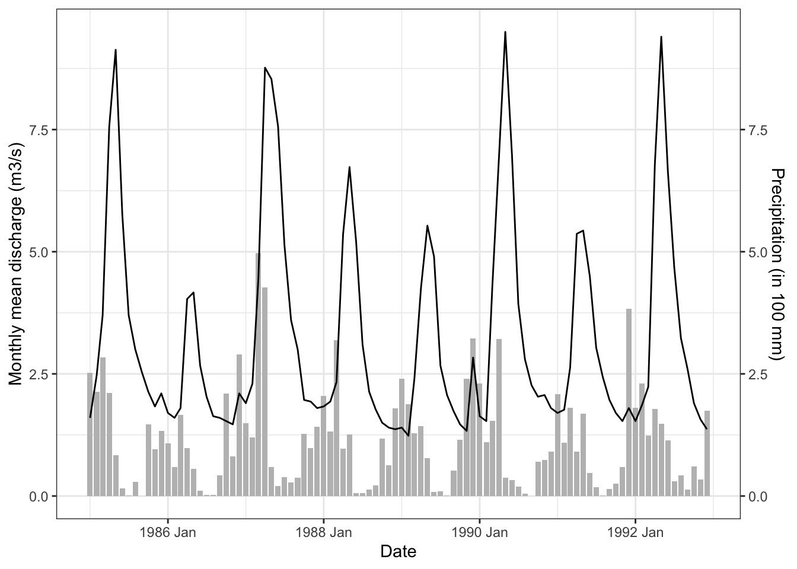
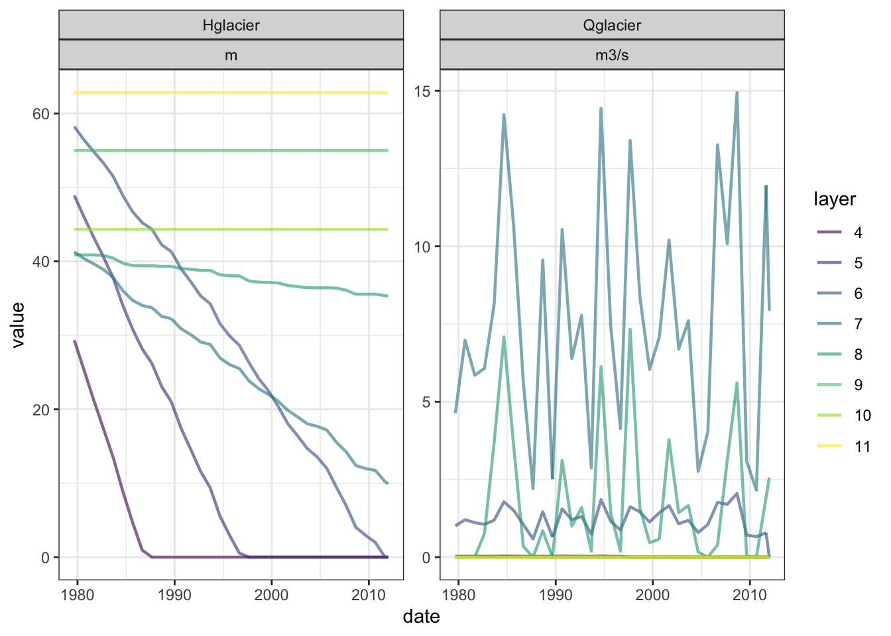
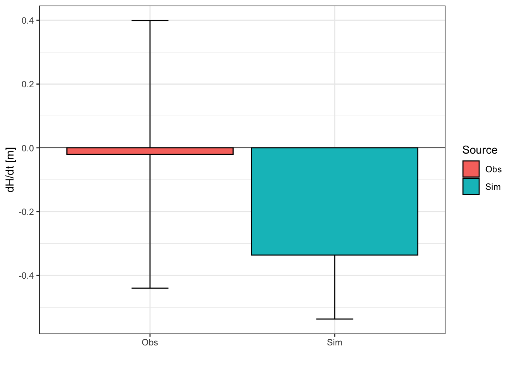

8 Hydrological-Hydraulic Modeling
Hydrological-hydraulic models are used for different purposes, including for the design of basin plans taking into consideration different development options, for the study of adequate water resources management schemes taking into consideration all types of sectoral users and uses of water in a basin (ideally also including minimal environmental flows), for the design of hydropower installations and the detailed study of basin-scale climate impacts and their repercussions.
This Chapter introduces combined hydrological and hydraulic modeling using the freely available graphical modeling environment RS Minerve (CREALP 2021; Foehn et al. 2020; Garcia Hernandez et al. 2020)1. An example model of the Gunt River setup in RS Minerve is shown in Figure 8.1.
It should be noted that other modeling packages exist for hydrological-hydraulic modeling. Among others, these include
- WEAP: Water Evaluation and Planning System,
- SWAT: Soil & Water Assessment Tool, and
- Mike Hydro Basin
- etc.
As some, if not most, of these modeling packages are license-based, the advantage of using the combination of QGIS, R, Python, and RS Minerve is that these are free software tools, suitable for any user and use scenario, with a large global user base.
Starting with catchment-specific GIS data (see Chapter 5), RS Minerve allows to quickly develop, test and calibrate different types of lumped conceptual precipitation runoff models while taking into account the evolution of water balances in glacier, snow, surface and subsurface compartments over time and in different sections in the catchment under consideration. This is demonstrated here for the Gunt River Basin in the Pamirs (see Chapter @ref(GuntRB) for more information).
The main goal in this Chapter is to familiarize the student on how to setup such model, calibrate and validate it for past and current climate conditions and then to study climate change impacts in the basin.
8.1 Prerequisites
Before delving into this section of the course material, you should have at least:
- RS Minerve installed How to install RS Minerve. This tutorial was written using RS Minerve 2.9.1.0.
- Read chapters 1 and 2 from the RS Minerve user manual (Foehn et al. 2020) (the manual can be downloaded from the CREALP website, see Section How to install RS Minerve).
- Familiarize yourself with RS Minerve by following Example 1 in the RS Minerve User Manual.
- Read the HBV model description in the RS Minerve technical manual (Chapter 2.7) (Garcia Hernandez et al. 2020).
You may have to dig deeper into the user manual and the technical manual within the frame of the course but the above points are the minimum requirement to get started.
If you fulfill the prerequisites, you should be able to do the tutorial with the minimal description in the modeling section. However, detailed step-by-step descriptions are linked for each task.
8.2 General Modeling Process
Hydrological modeling is an iterative process (see Figure 8.2). At the beginning, the purpose of the model has to be defined. The model goal determines the spatial and temporal resolution of the hydrological model. E.g. for analyzing the impact of climate change on seasonal, regional flows we are interested in the seasonal flow volumes whereas a model used for early warnings from floods requires high temporal resolution and a high model performance for threshold overflows. See for example Blöschl and Sivapalan (1995) for a thorough discussion of scales in hydrological modeling. Please note that the definition of the model goal also determines the performance criteria the model has to fulfill in order to be judged suitable for its purpose. As a next step, data about the catchment is gathered (see for example basin characterization in the Chapter Case Studies) and a first conceptual model of the dominant flow processes in the basin is drafted (e.g. low peaks and significant base flow point to large storage capacity in the basin whereas high peaks and low base flow indicate small storage capacity in the basin). The conceptual model of the river catchment is then implemented with a mathematical model (e.g. the HBV model in RS Minerve) and parameterized as well as possible (i.e. using reasonable estimates for initial parameter values). The model is then calibrated and validated (i.e. tested with a previously unseen data set) as described further below If the performance criteria for the model calibration are satisfied, a conscientious modeler performs a sensitivity analysis to gain confidence in the model. From each of these steps, the modeler can (and generally has to) go back to a previous step to gather more data, modify the conceptual model, adapt the model implementation, re-calibrate the model and/or re-evaluate the model sensitivity. Also, the modeler is aware of the inherent uncertainties of the data and the model (see for example Refsgaard et al. (2007) for a discussion on how to include uncertainties in the modeling process). The described steps produce a model (or an ensemble of models) that satisfy the performance criteria, only now the modeler can start actually using the model for the purpose it was implemented for.

Modeling is an involved process requiring highly specialized knowledge and skills. A modeler has the responsibility to clearly state the underlying assumptions, uncertainties and limitations of their model, especially if it is to be used in decision making. This book chapter will guide you through the modeling process with the example of the Nauvalisoy catchment.
8.3 The Simplest Model - The Linear Reservoir Model
Why do we do hydrological modeling? Typically, we want to know how much river flow we can expect at a given time in the future so we can plan our water consumption ahead, harness against floods or implement measures against droughts. So how can we forecast river discharge? For example, one could use the long term seasonal average discharge as the likely future discharge. However, in some years we have high discharge and in some years we have low discharge (Figure 8.3). How to tell when you have which discharge?

Let’s go back to the water balance: Where does the water in the river come from? Precipitation. When we compare precipitation and discharge time series we see that the two are related (Figure 8.4).

Higher precipitation in the catchment is positively correlated with higher discharge in the river with a delay. Or, in other words: The discharge is the catchments hydrological response to precipitation. The relationship is can be expressed as follows:
\[ Q \propto P \cdot K \]
In words, this reads: Discharge \(Q\) is proportional to precipitation \(P\) times a transfer function \(K\) that defines the delay of the signal. The transfer function \(K\) describes how precipitation becomes river discharge. It depends on the catchment characteristics, importantly on the storage capacity of the catchment. In reality, the transformation of precipitation to discharge is quite complex but we can simplify the reality and come up with a basic conceptual model of our river catchment: a large bath tube with the area of the catchment and an outlet at the bottom. Such a conceptual model is called the linear reservoir model (Figure 8.5).
The linear reservoir model describes the discharge from the reservoir as linearly proportional to the storage in the reservoir:
\[ Q(t) = 1/k \cdot S(t) \]
Where \(Q\) is discharge, \(S\) is the storage and \(k\) is a constant called storage coefficient depending on the storage capacity of the reservoir. If \(k\) is small, the stored water will run out quickly, if \(k\) is large, the stored water will run out slowly. Time-dependent variables are indicated with \((t)\), i.e. variables that change over time.
Substitute the linear reservoir equation into the water balance:
\[ P = Q + dS/dt \Leftrightarrow P = Q + k \cdot dQ/dt \]
Where \(P\) is the excess precipitation, i.e. the precipitation that is not intercepted by plants or ponds and not evapotranspirated back to the atmosphere but contributes to discharge. The above is a differential equation and can be rearranged:
\[(P-Q) \cdot dt = k \cdot dQ\]
and integrated and solved for \(Q(t)\) (dig out your math skills!). In the example in the box below, we discretized the water balance with the linear relationship between discharge and storage change in the reservoir:
\[\frac{P(t_1)+P(t_1)}{2} - \frac{Q(t1)+Q(t_2)}{2} = \frac{k}{t_2-t_1} \cdot (Q(t_2)-Q(t_1))\]
and solved the equation for \(Q(t_2)\) (Inspiration from Pedersen, Peters, and Helweg (1980)).
We assume that at the beginning of our experiment, we don’t have a discharge as the bucket is empty.
\[Q(t) = P(t) \cdot (1-e^{(-t/k)})\]
This is the equation for the rising discharge curve. Once you turn off the recharge of the reservoir (once you stop pouring water into the bucket), the discharge from the bucket can be described as:
\[Q(t) = Q^* \cdot e^{-\tau/k}\]
Which describes the receding limb of the hydrograph (What is a hydrograph) with \(\tau\) being the time since the recharge stopped.
Understanding the linear reservoir model is the first stepping stone to hydrological modeling as many conceptual models build up on linear reservoirs. This includes the model presented next, i.e., the HBV model.
8.4 The HBV Model
The HBV (Hydrologiska Byråns Vattenavdelning) model is a conceptual rainfall-runoff model which is suitable for many snow-fed river catchments (Bergström 1980; Lindström et al. 1997). We recommend you to study the short description on the HBV model in the RS Minerve technical manual (Garcia Hernandez et al. 2020). Keep these 4 pages at hand for the following exercises. Like this, you can look up how the parameters influence the flow of water through the HBV model. A brief reminder of the HBV model implemented in RS Minerve is given in Figure 8.6.
In RS Minerve, the catchment area is typically subdivided into areas with similar hydrological properties, so-called hydrological response units or HRUs, for which the discharge is computed individually. Several HRUs can be connected. This approach is often numerically more efficient than a gridded representation of the catchment area via a domain discretization.

Water enters the HBV model in the form of precipitation \(P\), which is a model forcing provided by the user. Precipitation is separated into solid (snow fall \(SF\)) and liquid (rainfall \(RF\)) depending on the threshold temperature \(T\), the second model forcing provided by the user. The uppermost component of the HBV model is the snow model (the two top-most blue reservoirs in Figure 8.6). A degree-day-melt model melts snow and refreezes water (\(M_{sn}\)), depending on the meteorological conditions.
The rainfall plus the snow melt are accumulated to the precipitation equivalent \(P_{eq}\) which enters the uppermost soil layer represented in HBV by the soil humidity reservoir of the root zone. This non-linear reservoir represents the loss of water to direct evaporation and to plant evaporation. Potential evaporation \(ETP\) thereby is another model forcing, albeit optional, as it can be provided by the user or calculated based on temperature and latitude by RS Minerve.
Water that is not evaporated or held in the root zone is recharged to deeper soil layers, the upper reservoir. The upper reservoir constitutes the unsaturated zone below the root zone and produces the direct runoff or near-surface runoff (\(Q_r\)) that occurs when the soils are saturated and the interflow (\(Q_u\)) which is a lateral discharge in the unsaturated zone.
Through deep percolation (\(i_{Perc}\)) water reaches the lower reservoir which corresponds to the saturated zone, the groundwater layer, and produces the baseflow or the lateral discharge of groundwater (\(Q_l\)). By the way, the lower reservoir is very similar to the linear reservoir discussed above with the exception of an upper storage limit (\(SL\)).
The several reservoirs of the HBV model come with a multitude of parameters (Figure 8.7) which have to be adjusted such that the model reproduces the measured discharge of the basin, a process called model calibration which will be discussed in more detail further on in this chapter. Here, we’d like you to note the number of model states and parameters or degrees of freedom the HBV model has and to compare it to the amount of measurements of model states that is actually available to constrain the model parameters.

In the HBV model, 6 parameters need to be constrained alone for the snow model (Figure 8.7). Typically, measurements of the states of the model reservoirs (\(SWE\) and \(WH\), \(Hum\), \(SU\), \(SL\)) are not available. Thus, more often than not, parameters of hydrological models are solely calibrated based on the aggregated total discharge of a basin. A lot of care should be given to trying to constrain the model parameters using combinations of different approaches:
- Minimize the number of parameters in your model. This is done by fixing the least sensitive parameters to literature values.
- Compare to parameter values from the literature for similar catchments.
- Look for data sets that may be used to calibrate parts of the model.
- Do not only minimize the error between the measured and the simulated discharge but look at all the models states and fluxes and make sure they are physically meaningful.
Luckily, research into suitable data products to further constrain hydrological models exists. The simulated snow water equivalent may be compared to the snow water equivalent (SWE) available from a) the High Mountain Asia Snow Reanalysis or the SLF operational snow model product as mentioned earlier (see Section 6.2 for more information). Like this, additional data can be used to further constrain model parameters in the calibration step.
8.5 The GSM Model
Similar to the HBV model, the GSM model separates precipitation into solid and liquid precipitation, depending on temperatures, and features a snow pack module. In addition to the HBV snow module, the GSM snow module allows seasonal varying snow melt coefficients using a sinusoidal modulation. Details can be read in the RS MINERVE technical manual (Garcia Hernandez et al. 2020) (see Figure 8.8).

The melting of the snow pack yields the so called equivalent precipitation \(P_{eq}\). Runoff from snow melt is subsequently produced through release from a linear reservoir. Glacier area is assumed to be constant in the GSM model and glacier melt only occurs when the snow cover above the glacier has melted away. Also the glacier melt coefficient can be modulated according to a sinusoidal function, analogue to the snow melt coefficient. Runoff from glacier melt is then produced after transformation of the glacier melt signal through a linear reservoir.
The GSM model has a large number of model parameters which need to be calibrated. Snow height data on glaciers is generally not available from in-situ measurements but in recent years, estimates on glacier thickness, thinning rates or glacier discharge rates have become publicly available (see Chapter 6). These data may be used to guide GSM model calibration (see Section 8.7).
RS Minerve GSM model limitations
RS Minerve does not implement a glacier mass balance with GSM. Significant factors like the change of the glacier geometry as a glacier is melting, are neglected. Further, the GSM implementation of RS Minerve assumes an infinitive glacier reservoir. That means that glacier melt is produced even if glacier thickness becomes negative. This is typically not an issue during short term simulations of a couple of decades as long as glaciers do not disappear during the simulation period. For climate change impact studies however, smaller and lower-lying glaciers are expected to disappear completely. The currently implemented GSM version cannot deal with this situation.
For simple, linear models with no downstream water uses implemented, the glacier discharge can be set to zero after the simulation run. For more complex models with downstream water uses however, a simulation needs to be stopped regularly to check the status of the glacier thickness. If the glacier volume in a HRU has melted away, glacier melt in that HRU needs to be turned off. This can for example be done by setting the melt coefficients to 0.
8.6 The RS Minerve Modeling Environment
The reader should already be familiar with RS Minerve through completion of Example 1 in the RS Minerve user guide (Foehn et al. 2020). The following paragraphs demonstrate how to automatically implement a hydrological model in RS Minerve using an example basin from Central Asia. The basin of the river Chon Kemin hereby serves as a demonstration site. All data are available in the Student Case Study Pack.
8.6.1 Loading GIS Data
Open RS Minerve and move to the GIS tab (1). Click on the Add Layers button in the top right corner of the menu bar (2). An explorer window will pop-up where you select the layers you want to load (3). You require the HRU, junction and river layers which have been prepared for you in the student case study pack.
 Click Open (4) to close the explorer window and to load the selected GIS layers into RS Minerve. The result is shown in Figure 8.9.
Click Open (4) to close the explorer window and to load the selected GIS layers into RS Minerve. The result is shown in Figure 8.9.

RS Minerve offers limited GIS utilities. You can, for example, change the colors of the GIS layers in the layer properties. The usage is similar to QGIS. You can further inspect the layer attributes by selecting a layer (1) and clicking the Table Info button (2) to open the attribute table.

8.6.2 Automatic Model Generation
To automatically generate the model structure, make sure, the 3 required GIS layers are loaded (see Section above), then click on the Creation button in the Model Management toolbox (1). The model creation configuration window will pop up where you select the appropriate attributes for each model layer from the drop-down menus (2, 4). Tick the Altitude (Z) option in the Subbasins properties and select the Z attribute (3) to let RS Minerve know the altitude of each HRU.
Then select all subbasins in the Allocate Subbasins Type window (5) and click on the model object selector (6).
Select the HBV model (1) and click the Allocate Subbasins button (2).

All the subbasins should now display the red HBV icon as shown in Figure 8.14. If you have glaciers in your basin and prepared your subbasins layer accordingly (see Section 5.3), you now select the glacier HRUs and allocate GSM objects to them (Figure 8.13).
Next, select the river stretch ChonKemin (1), select the Kinematic Wave in the drop-down menu (2) and press Allocate Rivers (3). The icon of the rivers sections should subsequently be colored in the Kinematic Wave colors (not shown).
Finally, press the Create Model button in the lower right corner of the RS Minerve window (4). If the model creation process is successful, the message Creation model finished. appears in the lower left corner of the RS Minerve window (5). If the model creation process is not successful, an error message will appear instead at the same location which will support you in identifying the problem.
You can now switch to the Model tab and look at the automatically generated model layout (Figure 8.15).
The river stretch is no longer required. Delete it by selecting it with a left-click on the river object and then pressing delete in the Editing Tools menu in the header bar.
You can beautify the model view by loading a background image of the Chon Kemin catchment (for example a screen shot from QGIS, Figure 8.16) and by re-arranging the HRUs (click and drag) and climate stations for better readability.
If you have generated GSM model objects, each of them will have a virtual weather station assigned to it. We approximate the weather forcing on the glaciers with the weather forcing in the respective HBV HRU for which we have already prepared the input file (see Chapter 7). We delete the automatically generated station objects connected to the GSM objects and connect the station objects of the appropriate HBV object (same elevation layer) to the GSM objects. Stations at high elevations in glaciated basins thus are connected to both HBV and GSM model objects (Figure 8.17). Attention, do not forget to specify the initial glacier thickness in the initial conditions of the GSM model objects.
Now we need to add Comparator and Source Objects in order to be able to compare the simulated river discharge to the observed discharge. Step-by-step, you need to click on the Source Object in the model object list (1). A small faucet icon will appear in lieu of your customary cursor icon. Move your cursor to an appropriate location in the map window and click to place the source object (2). Do the same for the Comparator Object and activate it by clicking the object (3) and place it with a click in the map window (4).

The new objects now need to be connected to the rest of the model objects. Activate the Connections mode in the Editing tools box of the header bar (5). Then draw a line from the source object to the comparator object (6). In the pop-up window, specify that the source object is your reference (7). Then acknowledge by clicking Ok.
In the same manner, draw a connection from the Junction Object (15149_gauge) to the Comparator (1) and specify that the Junction represents your simulated discharge (2).

Deactivate the connection mode by clicking the Select button (3). You can rename the new objects by clicking on their names. The basic model layout is now finished but there are still a few required steps before we can run the model.
With the present model, we can now simulate discharge from rainfall and snowmelt. We can further simulate the evolution of the water storage in different compartments in the catchments. What about glacier melt? Glacier melt can be simulated in RS Minerve with the GSM model. However, the GSM model is only marginally suitable for long-term scenario simulation. We therefore suggest a different glacier modeling strategy where discharge from glacier melt is simulated externally and then included in RS Minerve as a source. The process is described in Chapter Chapter 11.
8.6.3 Loading Climate Data
The hydrological model needs forcing data, i.e., precipitation and temperature. The following sections illustrate how to load the preprocessed climate data into RS Minerve.
Navigate to the Database tab (1) and click the Open button (2). This opens an explorer pop-up window where you choose CSV files in the drop-down menu (3) and then select the file hist_obs_rsm.csv. Close the explorer window by pressing the Open button (hidden beneath the drop-down menu in ?fig-rsm-load-db-01).
In the navigation window on the left, a database icon will appear. Explore the Database by clicking on the triangle next to the icon. You can display the data in the database by clicking on the Sensors (1), typically T (temperature), P (precipitation) and Q (discharge), in the navigation window. A time series plot will then appear in the main window. You can also explore the data in the table format by switching to the Values tab (2).
 Note the time range of the forcing data (from Jan 1, 1979 0:00 to Dec. 21, 2011 0:00). The time range of the forcing determines the time range of the simulation. Also note the time interval between the data (daily data for the forcing and decadal data for the discharge).
Note the time range of the forcing data (from Jan 1, 1979 0:00 to Dec. 21, 2011 0:00). The time range of the forcing determines the time range of the simulation. Also note the time interval between the data (daily data for the forcing and decadal data for the discharge).
Click on New group (1, not visible because the name is already changed in Figure 8.20) and change the name of the group to Climate (2). In the dropdown menu, select Input for the data category (3).
We now move the discharge time series to a separate data group: Select Database (1) then click Add (2). A new group appears at the bottom of the data list (3). Select New group (3) and change the name (4) to Discharge and select Input from the dropdown menu (5).

Navigate to the discharge time series Q (1) and do a right-click. In the pop-up window that appears select Cut (2).
Select Discharge (1) and click Add (2) to add a new data set (3). Right-click on New Dataset and select Paste to put the discharge sensor data at the new location. You can rename New Dataset.

The database is now ready, next we need to link the data to the model objects. Navigate to the Model tab. Under Data source select the appropriate data groups for the station data objects and for the source objects (1) and select the appropriate Dataset (2). The names in the database tab should already be consistent with the ones in the objects and the linking for the weather stations works automatically.
Then adapt the Start and End of the simulation period (4). Start cannot be earlier than the first forcing in the database and End cannot be later than the last forcing in the database. The simulation period can, however, be shorter than the forcing time series. The simulation time step is 1 day and the recording time step is 1 month (4).
The for the linking of the discharge data with the source we still need to double-click on the source object in the map (1) and select Q * Q in the drop-down menu (3).
8.6.4 Configuration
Last but not least we need to tell RS Minerve to compute the evaporation flux for us. This step needs to be done only once for each model and is described in the Quick guide. Don’t forget to save your model.
8.6.5 First Model Run
Now click Validation (1) to let RS Minerve test if the model is valid.
In case the model is valid it will say so in the lower left corner of the RS Minerve window (2). A more detailed report appears in the output window on the right (3). The warning can be ignored as the discharge of the source is not a required input for the model simulation.
Now press Start (1). The simulation is done fairly quickly. With a double-click on the comparator object in the center window the output window fills with a lot of information. The Results table shows a number of indicators of model goodness. Here we will only briefly mention the most commonly encountered2.
The relative root mean squared error (RSME) ranges from 0 to \(\infty\) and should be minimized. \[ \text{RRMSE} = \frac{ \sqrt{ \frac{1}{N} \cdot \sum_{t=1}^N \Big( Q_{sim}(t) - Q_{obs}(t)\Big)^2}}{\overline{Q_{obs}(t)}} \]
The Nash-Sutcliffe efficiency (Nash) ranges from -\(\infty\) to 1 and should be maximized. Nash of 0 means that the model has the same performance as the long-term average of the measured data. \[ \text{Nash} = 1 − \frac{\sum_{t=1}^{N} \Big( Q_{sim}(t) - Q_{obs}(t) \Big)^2}{\sum_{t=1}^{N} \Big( Q_{sim}(t) - \overline{Q_{obs}(t)} \Big)^2} \] Where \(t\) is the simulation time step, \(N\) is the number of simulation time steps, \(Q_{sim}(t)\) is the simulated discharge and \(Q_{obs}(t)\) is the observed discharge at time \(t\). \(\overline{Q_{obs}(t)}\) refers to the average of the observed discharge.
If your customer is especially interested in low discharge periods, the Nash coefficient for logarithm values is recommended (see Garcia Hernandez et al. (2020)). There are further performance indicators focusing on the discharge volume (Relative Volume Bias) or on the exceedance of a threshold flow, which can be specified in the parameters of the comparator.
The graph (4) shows the measured discharge in blue (QReference) and the simulated discharge in green (QSimulation).
Note that QSimulation starts with 0. This is because RS Minerve initializes the initial water content of the HBV modules with 0 unless something else is specified. You should click Conditions on Dec. 12, 2011 (2), apply and re-run the model to obtain a properly initialized model.
To view the default initial conditions (IC) and parameters of a model object (2), double-click on the model object in the main model window (1). You can edit the IC and parameters in the tables of the result window (2). You can view properties of several objects the IC viewer (and similarly in the parameters viewer) by clicking on the Initial conditions button in the Model Properties toolbar (3). Select the object type (4) and the zone (5) and scroll through the IC table (6).

It is recommended to save a backup of the initial parameter set. During model model calibration experiments the modeler can sometimes end up with unrealistic parameter combinations and then it is appropriate to reset the model and start afresh. Click on Export P in the Model Properties toolbar to save the default parameters as a text file which can be imported using the Import P button.
The model produces the correct seasonality but the water balance is way off. The RS Minerve model produces more discharge than is observed at the monitoring station. We fix this by calibrating the model. This is a big task and will be treated in the next chapter.
8.7 Model Calibration
The large number of parameters of the HBV model can be adjusted within reasonable ranges to make the simulated river discharge more similar to the measured discharge. This model calibration process is sometimes also called history matching because past or historical measurements are used to adapt the model parameters. Mathematically speaking, model calibration is an optimization problem where the value of a performance indicator (or a combination of several performance indicators) is minimized. An example: The model calibration changes the parameters of the model such that the error between the observed and simulated discharge is minimized.
The simplest form of such an equation is given below where for each time step \(t\), the difference between the simulated (\(Q_{sim}\)) and observed (\(Q_{obs}\)) discharge is computed. The simulated discharge depends on the parameters \(\boldsymbol{P}\) (note: \(\boldsymbol{P}\) is a vector of parameters). The differences between the simulated and observed discharge are summed up to result in one value \(\boldsymbol{E}\), depending on \(\boldsymbol{P}\) which can be minimized by changing the parameters \(\boldsymbol{P}\).
\[ \min_{\boldsymbol{P}} \sum_{t=1}^{N} \Big( Q_{sim}(t, \boldsymbol{P}) - Q_{obs}(t) \Big) = \min_{\boldsymbol{P}} \boldsymbol{E(\boldsymbol{P})} \]
RS Minerve features implementations of several different performance indicators. The choice of the minimization function influences the calibration outcome. Two commonly used performance indicators are described [above]{Section 8.6.5}. Please read the Chapter on the performance indicators of the RS Minerve technical manual (Garcia Hernandez et al. 2020) to also understand the other performance indicators that are available.
Hydrological models are typically not well defined, i.e. multiple sets of parameter combinations will yield reasonable model performance. This property of hydrological models is sometimes called the equifinality problem, i.e. several pathways lead to the same outcome. Modelers just have to live with this but there are several strategies to minimize the negative impact of the equifinality.
Calibration and Validation
An important strategy to gain confidence in a model is to split the simulation period into a calibration period and a validation period. During calibration, the model parameters are adjusted to get a satisfying fit with the measured discharge. During the validation period the calibrated model is compared to discharge data that the model hasn’t seen before, i.e. the model’s ability to handle potentially different model input than it has seen during calibration (also called its ability to generalize) is revealed. For example, 30 years of discharge time series can be split into the first 20 years for model calibration (i.e. model calibration is done only over the first 20 years of the time series) and into the last 10 years for model validation. A good model should perform satisfactorily not only during calibration but also during validation. If the model validation period shows better model performance than the calibration period, the modeler should take a close look at the forcing and try to explain this.
In hydrology, it is recommended to do cross-validation, i.e. to calibrate and validate a model with several combinations of calibration and validation periods and to summarize the overall model performance and the resulting parameter combinations.
Interested readers are referred to the literature for a more thorough discussion of the topic. For example, Bergstroem (Bergström 1991) gives a thorough discussion of model calibration and validation based on the HBV model. Albeit a bit dated, the discussion is still valid today.
Warm-up Period
To overcome issues with the initial water content of the catchment, a warm-up or spin-up period is typically defined. For small basins with small storage (like the mountainous basins in Central Asia) one year of model warm up is typically sufficient to fill the models reservoir with an appropriate amount of water. The warm-up period is specified in the comparator properties and excluded from the automatic calibration process.

Fixing of Non-Sensitive Parameters
Before starting a full automated calibration of the model, it is advisable to identify parameters which are not sensitive and to fix them to reasonable values. In a fist step, parameters of all HRUS in the catchments are assumed to be the same. Then, one by one, the parameters are varied (simultaneously in all HRUs) to assess the impact of the parameters on the resulting discharge. If one parameter value is not sensitive, i.e. if changing the parameter value does not significantly impact the discharge, it is fixed to a literature value. The following figures illustrate the procedure:
Remember the value of a performance indicator, for example the Nash efficiency. Then, open the Parameters window by pressing the Parameters button in the Model Properties toolbar (1), select HBV (2) and the default zone A (3) in the drop-down menu, and double the Melting factor (\(\text{CFMax}\)) (4). Apply the changes (5) and re-run the model.
If the performance indicator becomes worse (e.g. more negative in the case of Nash), change the parameter to half of the original parameter value (2.5 in the present example and re-run the model). In the Chon Kemin example shown here, Nash will become less negative. We conclude that \(\text{CFMax}\) is a sensitive parameter that should be calibrated. If the change of the parameter value does not produce a similar relative change of the performance indicator, the model is not highly sensitive to that specific parameter and it does not need to be calibrated.
Cross-Validation
It is good practice to validate your results with data from the literature and with other, publicly available data sets. Literature values may be useful to limit parameter ranges for the calibration and to verify the conceptual hydrological model. Data sets like the High Mountain Asia Snow Reanalysis data set can be used to verify the snow water balance (automated calibration of snow water equivalents is not currently possible in RS Minerve) and for flatter areas, soil remotely sensed moisture observations and evaporation products may be used to constrain the parameters of the root zone and upper soil box.
Calibration Procedure
It is advisable to not calibrate all parameters at the same time but to calibrate module by module from the top-most layer to the bottom-most layer (along the flow path of the water). I.e., in the case of the HBV model, start by calibrating the sensitive parameters of the snow module, then proceed to the root zone module, the upper soil module and last calibrate the parameters of the groundwater module. This procedure may not yield an absolute minimum of the objective function (the best performance indicators possible) but it will leave you with physically meaningful parameters which is what is important.
In between calibrations of individual parameters, switch to the model tab or to the selection and plot tab and look at the results of individual model components. Make sure you don’t have accumulation of snow in the lower HRUs. Accumulation of snow may only be justified in glacierized HRUs. Also other water reservoirs may accidentally be filling up or emptying out, e.g. storage of the lower reservoir. Typically, the storage components in a hydrological system are more or less in steady-state (except for the glaciers). That means, that over several years, the water storage does not change much. If your model shows storage changes, they may be caused either by infrastructure or management changes (research) or by bad parameter sets. You should further update the initial conditions of the model from time to time to make sure that they are consistent with the model parameters.
You may perform several calibrations using different performance indicators and different calibration periods. This will give you a set of parameters which partially represent the uncertainty of the hydrological model.
Manual Calibration
Automated calibration is available in RS Minerve for discharge. However, inexperienced modelers should always start with an exploration of the sensitivity of the parameter space. Further, not all model states and fluxes can be calibrated using the automated calibration tools in RS Minerve, for example snow water equivalent. If automated calibration is not available, simulation results can be exported from RS Minerve and be compared to observed data (or simulation results from the literature) in R.
As mentioned above, publicly available data like snow water equivalents, snow covered area, glacier thinning rates or simulated glacier runoff data may be used to manually calibrate parameters of the GSM model objects. Such data typically has large uncertainties, sometimes in the order of 100 %, but it at least allows to make sure that simulated glacier runoff is in a reasonable order of magnitude.
The selection of simulation results in large models can be a tedious process. RS Minerve allows the import of a so called check node file in the xml format in which a selection of simulation results can be specified. The package riversCentralAsia offers the function writeSelectionCHK which facilitates the writing of such a check node file. The model calibration should start with the snow modules of the HBV model objects or the glacier thinning and discharge of the GSM model objects, then proceed to the soil moisture, upper and lower reservoir modules of the HBV model objects.
Calibration of Snow Water Equivalent
At the time of writing, RS Minerve does not yet support the automatic calibration of snow water equivalent (SWE). However, snow melt is a major contribution to discharge in Central Asia. Measurements of SWE are only very rarely available and only at very few locations. Thus, products such as the SWE SnowMapper which operationally monitors snow height and SWE in Central Asia (see Section 6.2.2) or reanalysis products like the High Mountain Asia Snow Reanalysis (HMASR) product (see Section 6.2.1) are valuable resources to validate hydrological models.
In the snow and glacier data section we have demonstrated how to extract average SWE from the HMASR product for each elevation band in the Atbashy basin. It is highly recommended to study the technical manual of each data set prior to using it and to review the data set for its quality. We will show here how to extract simulated SWE from RS Minerve and how it may be compared to the HMASR data set.
The code snipped below demonstrates how to write a check node file for the HBV model objects in the hydrological model of the Atbashy river basin.
library(tidyverse)
library(lubridate)
library(sf)
library(ncdf4)
library(riversCentralAsia)
# Path to the data directory downloaded from the download link provided above.
data_path <- "../caham_data"
# Read in a list of HBV objects in the model
Object_IDs <-
st_read(file.path(data_path, "SyrDarya/Atbashy/GIS/16076_HRU.shp")) |>
st_drop_geometry()
# Define the model objects and variables for the selection
data <- tibble(
Model = rep("Model Atbashy", length(Object_IDs$name)),
Object = c(rep("HBV92", length(Object_IDs$name))),
ID = Object_IDs$name,
Variable = rep("SWE (m)")
)
# Write the check node file which can be imported to RS MINERVE
writeSelectionCHK(
# To reproduce the example, make sure the below filepath exists
filepath = file.path(data_path, "SyrDarya/Atbashy/RSMINERVE/SWE.chk"),
data = data,
# The name of the selection will appear in RS MINERVE
name = "SWE"
)The check node file is read in to RS Minerve under the Selection and plots tab, using the Import button. A new selection named SWE will appear which can be exported to a csv file using the button Export Results to… The following code snipped demonstrates how to read in the simulated SWE to R.
library(tidyverse)
library(lubridate)
library(sf)
library(ncdf4)
library(riversCentralAsia)
swe_sim <- readResultCSV(
file.path(data_path,
"SyrDarya/Atbashy/RSMINERVE/Atbaschy_Results_SWE_uncalibrated.csv")) |>
mutate(Subbasin = gsub("\\_Subbasin\\_\\d+$", "", model),
# Extract the elevation band level from the HRU names, for plotting
"Elevation band" = str_extract(model, "\\d+$") |> as.numeric(),
"Elevation band" = factor(`Elevation band`, levels = c(1:20)))
ggplot(swe_sim) +
geom_point(aes(date, value, colour = `Elevation band`),
alpha = 0.4, size = 0.4) +
scale_colour_viridis_d() +
facet_wrap("Subbasin") +
ylab("SWE [m]") +
xlab("Date") +
theme_bw()Now we import the SWE extracted from the HMASR product for each elevation band and compare the observed SWE to the simulated one.
# Loads SWE extracted from HMASR per HRU in the Atbashy model.
load(file.path(data_path, "SyrDarya/AtBashy/SNOW/SWE.RData"))
compare_swe <- swe_sim |>
rename(Sim = value) |>
dplyr::select(date, model, Sim, Subbasin, `Elevation band`) |>
left_join(swel |>
dplyr::select(Date, Name, SWE) |>
rename(Obs = SWE),
by = c("date" = "Date", "model" = "Name")) |>
mutate(Month = month(date),
Year = hyear(date),
Month_str = factor(format(date, "%b"),
levels = c("Jan", "Feb", "Mar", "Apr", "May",
"Jun", "Jul", "Aug", "Sep", "Oct",
"Nov", "Dec")),
"Obs-Sim" = Obs - Sim)
# Calculate the performance indicator RMSE. Many other indicators may be used.
RMSE = sqrt(mean(compare_swe$`Obs-Sim`, na.rm = TRUE))
ggplot(compare_swe) +
geom_abline(intercept = 0, slope = 1) +
geom_point(aes(Obs, Sim, colour = `Elevation band`), size = 0.4) +
scale_color_viridis_d() +
xlab("Observed SWE [m]") +
ylab("Simulated SWE [m]") +
facet_wrap("Month_str") +
coord_fixed() + xlim(0, 1.5) + ylim(0, 1.5) +
theme_bw()The comparison of simulated and observed SWE shows biases, indicating an underestimation of SWE in the model which can be adjusted by adapting the parameters of the snow modules in the HBV model objects in RS MINERVE. The package riversCentralAsia allows you to edit parameter files from R using the functions readRSMParameters() and writeRSMParameters() (please see the package documentation for examples)3.
In places where SWE observations are not available or where operational data on SWE is required, a binary variable of SWE larger than a threshold per hydrological response unit (HRU) can be compared to snow covered area (a MODIS product) in each HRU (see for example Parajka and Blöschl (2008)).
Calibration of the Glacier Melt Model
The following code chunk demonstrates how a check node file can be prepared to read out simulated glacier discharge and glacier thickness from an uncalibrated version of the Gunt River model.
Please note that, in addition to a visual comparison of simulated vs. observed model states of fluxes, the computation of performance indicators is recommended. Tracking changes of performance indicators makes it straight forward to see, if a change in a parameter leads to the desired adjustment of the model outcome or not.
library(tidyverse)
library(lubridate)
library(sf)
library(ncdf4)
library(riversCentralAsia)
# Read in the HRU names
Object_IDs <-
st_read(file.path(data_path,"AmuDarya/17050_Gunt/GIS/17050_hru_GSM.shp")) |>
st_drop_geometry()
# Get a list of glacierised HRUs (their name starts with "gl")
gsm_objects <- Object_IDs |>
dplyr::filter(str_detect(name, "gl_"))
# Prepare a tibble with the variables to be written to the check node file
data <- tibble(
Model = rep("Model Gunt", (length(gsm_objects$name))*2),
Object = rep("GSM", (length(gsm_objects$name)*2)),
ID = c(gsm_objects$name, gsm_objects$name),
Variable = c(rep("Qglacier (m3/s)", length(gsm_objects$name)),
rep("Hglacier (m)", length(gsm_objects$name)))
)
# Write the check node file
writeSelectionCHK(
filepath =
file.path(data_path,"AmuDarya/17050_Gunt/RS_MINERVE/HQ_glaciers.chk"),
data = data,
name = "HQglaciers" # Name of the selection that will appear in RS MINERVE
)In the Selection and plots tab in RS MINERVE, click on Import and select the file HQ_glaciers.chk. You will see a new selection now called HQglaciers. You can now save the simulation results as csv by clicking the Export Results to… button. We call the file Gunt_Results_HQglaciers.csv and read it in as demonstrated below:
hqgl <-
readResultCSV(
file.path(
data_path,
"AmuDarya/17050_Gunt/RS_MINERVE/Gunt_Results_HQglaciers.csv")) |>
mutate(object = ifelse(str_detect(model, "gl_"), "GSM", "HBV"),
# Extract ID of elevation band for plotting
layer = str_extract(model, "\\d+"),
layer = factor(layer, levels = c(1:11)))
ggplot(hqgl |>
mutate(Hyear = hyear(date)) |>
group_by(Hyear, layer, variable, unit) |>
summarise(date = last(date),
value = ifelse(variable == "Qglacier",
mean(value),
last(value))) |>
ungroup()) +
geom_line(aes(date, value, colour = layer), alpha = 0.6, size = 0.8) +
scale_colour_viridis_d() +
facet_wrap(c("variable", "unit"), scales = "free_y") +
theme_bw()The above plot show how glacier thickness can go below 0. As this hydrological model is very simple, we can correct the glacier thickness and discharge after the simulation.
hqgl_corrected <- hqgl |>
pivot_wider(values_from = value, names_from = c(variable, unit),
names_sep = "|") |>
mutate("Qglacier|m3/s" = ifelse(`Hglacier|m` <= 0, 0, `Qglacier|m3/s`),
"Hglacier|m" = ifelse(`Hglacier|m` <= 0, 0, `Hglacier|m`)) |>
pivot_longer(c(`Qglacier|m3/s`, `Hglacier|m`), values_to = "value",
names_to = c("variable", "unit"), names_sep = "\\|")
ggplot(hqgl_corrected |>
mutate(Hyear = hyear(date)) |>
group_by(Hyear, layer, variable, unit) |>
summarise(date = last(date),
value = ifelse(variable == "Qglacier",
mean(value),
last(value))) |>
ungroup()) +
geom_line(aes(date, value, colour = layer), alpha = 0.6, size = 0.8) +
scale_colour_viridis_d() +
facet_wrap(c("variable", "unit"), scales = "free_y") +
theme_bw()

Glacier discharge as well as glacier thickness can be compared to literature data. By manually adjusting the GSM model parameters, both simulated glacier discharge and glacier thickness can become more similar to the literature data.
Comparing Computed to Observed Glacier Thinning Rates
Simulated glacier thinning rates may be compared to observed thinning rates by Hugonnet et al. (2021). The observed thinning rates are available by glacier while the simulated thinning rates are by HRU. We aggregate both data sets to the basin level (see @ fig-obs-hugonnet-gunt-raw).
# Read in the RGI glaciers shape cut to the Gunt basin to filter the Hugonnet
# data set
# Read in glacier geometries
rgi <-
st_read(
file.path(data_path,
"AmuDarya/17050_Gunt/Glaciers/17050_RGI_glaciers.shp")) |>
dplyr::select(RGIId, Area_m2, Volume_m3) Reading layer `17050_RGI_glaciers' from data source
`/Users/tobiassiegfried/hydrosolutions Dropbox/Tobias Siegfried/1_HSOL_PROJECTS/PROJECTS/[2020-06-TW] Currricula Strengthening CA/CourseMaterials/Handbook/caham_data/AmuDarya/17050_Gunt/Glaciers/17050_RGI_glaciers.shp'
using driver `ESRI Shapefile'
Simple feature collection with 1347 features and 3 fields
Geometry type: MULTIPOLYGON
Dimension: XY
Bounding box: xmin: 729359.9 ymin: 4093677 xmax: 939336.3 ymax: 4215699
Projected CRS: WGS 84 / UTM zone 42N# Glacier volume was already estimated in QGIS. You can also do this in R using
# the following example code:
# demo <- rgi |>
# mutate(Area_m2 = as.numeric(st_area(rgi)),
# Volume_m3 = glacierVolume_Erasov(Area_m2/10^6)*10^9)
hugonnet <-
read_csv(file.path(data_path, "/central_asia_domain/glaciers/Hugonnet/dh_13_rgi60_pergla_rates.csv"))
# Explanation of variables (see documentation by Hugonnet et al., 2021):
# - dhdt is the elevation change rate in meters per year,
# - dvoldt is the volume change rate in meters cube per year,
# - dmdt is the mass change rate in gigatons per year,
# - dmdtda is the specific-mass change rate in meters water-equivalent per year.
# Filter the basin glaciers from the Hugonnet data set.
hugonnet <- hugonnet |>
dplyr::filter(rgiid %in% unique(rgi$RGIId)) |>
tidyr::separate(period, c("start", "end"), sep = "_") |>
mutate(start = as_date(start, format = "%Y-%m-%d"),
end = as_date(end, format = "%Y-%m-%d"),
period = round(as.numeric(end - start, units = "days")/366))
# Join the Hugonnet data set to the RGI data set to be able to plot the thinning
glaciers_hugonnet <- rgi |>
left_join(hugonnet |>
dplyr::select(rgiid, start, dmdtda, err_dmdtda, period) |>
dplyr::filter(start == as_date("2000-01-01"),
period == 10),
by = c("RGIId" = "rgiid")) |>
group_by(start, period) |>
summarise(dmdtda = mean(dmdtda, na.rm = TRUE),
err_dmdtda = mean(err_dmdtda, na.rm = TRUE)) |>
ungroup()
sim_delta_Hglacier <- hqgl_corrected |>
# Filter the simulated glacier thickness to the same period as the observed
dplyr::filter(variable == "Hglacier",
date >= as_date("2000-01-01") & date < as_date("2011-01-01"))|>
mutate(Hyear = hyear(date)) |>
group_by(Hyear, model, unit) |>
summarise(Hglacier = last(value)) |>
ungroup() |>
# Calculate glacier thickness change
pivot_wider(names_from = model, values_from = Hglacier) |>
mutate(across(starts_with("gl"), ~ .x - lag(.x))) |>
drop_na() |>
pivot_longer(-c(Hyear, unit), names_to = "model", values_to = "dHgl/dt") |>
group_by(model) |>
summarise("sd(dHgl/dt)" = sd(`dHgl/dt`, na.rm = TRUE),
"dHgl/dt" = mean(`dHgl/dt`, na.rm = TRUE)) |>
ungroup() |>
mutate(model = gsub("gl_", "", model)) |>
# Aggregate by basin
summarise("sd(dHgl/dt)" = mean(`sd(dHgl/dt)`, na.rm = TRUE),
"dHgl/dt" = mean(`dHgl/dt`, na.rm = TRUE))
# Combine observed and simulated average glacier thinning in one variable
compareH <- glaciers_hugonnet |>
st_drop_geometry() |>
dplyr::select(dmdtda, err_dmdtda) |>
transmute(Source = "Obs",
"dH/dt [m]" = dmdtda,
lb = dmdtda - err_dmdtda,
ub = dmdtda + err_dmdtda) |>
add_row(sim_delta_Hglacier |>
mutate(Source = "Sim",
lb = `dHgl/dt` - `sd(dHgl/dt)`,
ub = `dHgl/dt` + `sd(dHgl/dt)`) |>
rename("dH/dt [m]" = `dHgl/dt`) |>
select(-`sd(dHgl/dt)`))
ggplot(compareH) +
geom_errorbar(aes(Source, ymin = lb, ymax = ub),
width = 0.2) +
geom_col(aes(Source, `dH/dt [m]`, fill = Source),
colour = "black", position = "dodge") +
geom_hline(yintercept = 0, size = 0.4) +
xlab("") +
theme_bw()

The average observed thinning rate is 2 cm/a and the simulated thinning rate is 34 cm/a. The simulated thinning remains within the uncertainty of the observed thinning rates but may be overestimated in the model. Let’s have a look ad glacier discharge data sets.
Glacier Discharge Comparison
Glacier discharge estimates in High Mountain Asia by Miles et al. (2021) are among the best currently available as they calculate the specific mass balance of the glacier.
# Load glacier ablation data by Miles et al., 2021 and filter to the Central
# Asian domain
# Limitation: Miles et al. report average total Ablation in m3/a for the years
# 2000 to 2016. Our historical forcing time series only goes until the end of
# 2011, that means that the averaging periods for the comparison of the
# observed and simulated glacier discharge do not overlap.
# Further, Miles et al. only cover glaciers with areas > 2 km2. The observed
# glacier discharge over the basin is therefore likely underestimated.
miles <-
read_csv(
file.path(data_path,
"/central_asia_domain/glaciers/Miles/Miles2021_Glaciers_summarytable_20210721.csv")) |>
dplyr::filter(grepl("RGI60-13.", RGIID),
VALID == 1) |>
dplyr::select(RGIID, totAbl, totAblsig)
glaciers_miles <- rgi |>
st_drop_geometry() |>
left_join(miles, by = c("RGIId" = "RGIID")) |>
summarise(totAbl = sum(-totAbl, na.rm = TRUE),
totAblsig = sum(totAblsig, na.rm = TRUE)) |>
ungroup()
sim_Qglacier <- hqgl |>
dplyr::filter(variable == "Qglacier",
date >= as_date("2000-01-01"))|>
mutate(Hyear = hyear(date)) |>
group_by(Hyear, model, unit) |>
summarise(Qglacier = mean(value),
sdQgl = sd(value)) |>
ungroup() |>
group_by(model) |>
summarise(Qglacier = sum(Qglacier)*60*60*24*365, # m3/s to m3/a
sdQgl = sum(sdQgl)*60*60*24*365) |>
ungroup() |>
mutate(model = gsub("_Gl", "", model)) |>
summarise(Qglacier = sum(Qglacier),
sdQgl = mean(sdQgl))
compareQ <- glaciers_miles |>
transmute(Source = "Obs",
"Q [10^6 m3/a]" = totAbl,
lb = totAbl - totAblsig,
ub = totAbl + totAblsig) |>
add_row(sim_Qglacier |>
transmute(Source = "Sim",
"Q [10^6 m3/a]" = Qglacier,
lb = Qglacier - sdQgl,
ub = Qglacier + sdQgl)) |>
mutate(`Q [10^6 m3/a]` = `Q [10^6 m3/a]`*10^(-6),
lb = lb/10^6,
ub = ub/10^6)
ggplot(compareQ) +
geom_errorbar(aes(Source, ymin = lb, ymax = ub),
width = 0.2) +
geom_col(aes(Source, `Q [10^6 m3/a]`, fill = Source),
colour = "black", position = "dodge") +
geom_hline(yintercept = 0, size = 0.4) +
xlab("") +
theme_bw()The observed glacier discharge is estimated at about 30 million m3/a whereas the simulated glacier discharge is estimated at about 1.5 billion m3/a. In the case of glacier discharge, Rounce, Hock, and Shean (2020b) simulate glacier discharge in High Mountain Asia using the Python Glacier Evolution Model (PyGEM) and make their data publicly available (Rounce, Hock, and Shean 2020a). Let’s compare our simulation results to theirs. The below code snipped demonstrates how the PyGEM simulation results can be extracted for a given basin. We have precomputed the data for the Gunt catchment.
glaciers <- rgi$RGIId
# Here we read in all nc files in a folder. For this example, we only use one
ncfilelist <- list.files(path = file.path(data_path, "/central_asia_domain/glaciers/PyGEM"), pattern = ".nc$",
full.names = TRUE)
ncfilelist <- ncfilelist[str_detect(ncfilelist, "_R13_")]
glac_melt_basin <- NULL
glac_runoff_basin <- NULL
offglac_runoff_basin <- NULL
glac_volume_basin <- NULL
for (ncfile in ncfilelist) {
# Get the rcp identifyer from the file name
rcp <- str_extract(ncfile, "rcp\\d{2}")
# Open a file for reading
file <- nc_open(ncfile)
# Get the RGI IDs and the glacier indices used in the PyGEM data set
rgiid <- ncvar_get(file, "RGIId")
pygem_indices <- ncvar_get(file, "glac")
# Identify the indices of the glaciers we are interested in in the nc file
rgi_indices <- which(rgiid %in% glaciers)
# Get dates for the monthly time series.
# The time series starts on October 1, 1999.
time <- ncvar_get(file, "time") # In days
date <- as_date("1999-10-01") + time
# Get dates for the annual time series.
year <- ncvar_get(file, "year_plus1")
date_annual <- as_date(paste(year, "10", "01", sep = "-"))
# Get the glacier volume and discharge for the selected glaciers
glac_melt_monthly <- ncvar_get(file, "glac_melt_monthly")[, rgi_indices] |>
as_tibble(.name_repair = ~ glaciers) |>
mutate(date = as.character(date)) |>
tidyr::pivot_longer(-date, names_to = "RGIId", values_to = "glac_melt_mweq") |>
mutate(rcp = rcp)
glac_melt_monthly_std <- ncvar_get(file, "glac_melt_monthly_std")[, rgi_indices] |>
as_tibble(.name_repair = ~ glaciers) |>
mutate(date = as.character(date)) |>
pivot_longer(-date, names_to = "RGIId", values_to = "glac_melt_std_mweq") |>
mutate(rcp = rcp)
glac_runoff_monthly <- ncvar_get(file, "glac_runoff_monthly")[, rgi_indices] |>
as_tibble(.name_repair = ~ glaciers) |>
mutate(date = as.character(date)) |>
pivot_longer(-date, names_to = "RGIId", values_to = "glac_runoff_m3") |>
mutate(rcp = rcp)
glac_runoff_monthly_std <- ncvar_get(file, "glac_runoff_monthly_std")[, rgi_indices] |>
as_tibble(.name_repair = ~ glaciers) |>
mutate(date = as.character(date)) |>
pivot_longer(-date, names_to = "RGIId", values_to = "glac_runoff_std_m3") |>
mutate(rcp = rcp)
offglac_runoff_monthly <- ncvar_get(file,
"offglac_runoff_monthly")[, rgi_indices] |>
as_tibble(.name_repair = ~ glaciers) |>
mutate(date = as.character(date)) |>
pivot_longer(-date, names_to = "RGIId", values_to = "offglac_runoff_m3") |>
mutate(rcp = rcp)
offglac_runoff_monthly_std <- ncvar_get(file,
"offglac_runoff_monthly_std")[, rgi_indices] |>
as_tibble(.name_repair = ~ glaciers) |>
mutate(date = as.character(date)) |>
pivot_longer(-date, names_to = "RGIId", values_to = "offglac_runoff_std_m3") |>
mutate(rcp = rcp)
# Aggregate to annual date for the basin
glac_melt_basin <- rbind(glac_melt_basin,
glac_melt_monthly |>
left_join(glac_melt_monthly_std, by = c("date", "RGIId", "rcp")) |>
mutate(date = as_date(paste(hyear(date), "10", "01", sep = "-"))) |>
group_by(date, rcp) |>
summarise(mean = sum(glac_melt_mweq, na.rm = TRUE),
lb = sum(glac_melt_mweq - glac_melt_std_mweq, na.rm = TRUE),
ub = sum(glac_melt_mweq + glac_melt_std_mweq, na.rm = TRUE)) |>
ungroup())
glac_runoff_basin <- rbind(glac_runoff_basin,
glac_runoff_monthly |>
left_join(glac_runoff_monthly_std, by = c("date", "RGIId", "rcp")) |>
mutate(date = as_date(paste(hyear(date), "10", "01", sep = "-"))) |>
group_by(date, rcp) |>
summarise(mean = sum(glac_runoff_m3, na.rm = TRUE),
lb = sum(glac_runoff_m3 - glac_runoff_std_m3, na.rm = TRUE),
ub = sum(glac_runoff_m3 + glac_runoff_std_m3, na.rm = TRUE)) |>
ungroup())
offglac_runoff_basin <- rbind(offglac_runoff_basin,
offglac_runoff_monthly |>
left_join(offglac_runoff_monthly_std, by = c("date", "RGIId", "rcp")) |>
mutate(date = as_date(paste(hyear(date), "10", "01", sep = "-"))) |>
group_by(date, rcp) |>
summarise(mean = sum(offglac_runoff_m3, na.rm = TRUE),
lb = sum(offglac_runoff_m3 - offglac_runoff_std_m3, na.rm = TRUE),
ub = sum(offglac_runoff_m3 + offglac_runoff_std_m3, na.rm = TRUE)) |>
ungroup())
# Read annual volume development and standard deviation
glac_volume_annual <- ncvar_get(file, "glac_volume_annual")[, rgi_indices] |>
as_tibble(.name_repair = ~ glaciers) |>
mutate(date = date_annual) |>
pivot_longer(-date, names_to = "RGIId", values_to = "glac_volume_km3ice") |>
mutate(rcp = rcp)
glac_volume_annual_std <- ncvar_get(file,
"glac_volume_annual_std")[, rgi_indices] |>
as_tibble(.name_repair = ~ glaciers) |>
mutate(date = date_annual) |>
pivot_longer(-date, names_to = "RGIId",
values_to = "glac_volume_std_km3ice") |>
mutate(rcp = rcp)
# Aggregate to basin level
glac_volume_basin <- rbind(glac_volume_basin,
glac_volume_annual |>
left_join(glac_volume_annual_std, by = c("date", "RGIId", "rcp")) |>
group_by(date, rcp) |>
summarise(mean = sum(glac_volume_km3ice, na.rm = TRUE),
lb = sum(glac_volume_km3ice - glac_volume_std_km3ice, na.rm = TRUE),
ub = sum(glac_volume_km3ice + glac_volume_std_km3ice, na.rm = TRUE)) |>
ungroup())
}
save(glac_runoff_basin,
glac_volume_basin,
file = file.path(data_path,
"/AmuDarya/17050_Gunt/Glaciers/17050_PyGEM_demo.RData"))load(
file.path(data_path,
"/AmuDarya/17050_Gunt/Glaciers/17050_PyGEM_demo.RData"))
glac_runoff_basin <- glac_runoff_basin |>
dplyr::filter(year(date) <= 2011) |> # Filter same period as simulation
group_by(rcp) |>
summarise(mean = mean(mean),
lb = mean(lb),
ub = mean(ub)) |>
ungroup()
compareQ2 <- compareQ |>
dplyr::filter(Source == "Sim") |>
add_row(tibble(
Source = "Obs",
"Q [10^6 m3/a]" = glac_runoff_basin$mean/10^6,
lb = glac_runoff_basin$lb/10^6,
ub = glac_runoff_basin$ub/10^6
))
ggplot(compareQ2) +
geom_errorbar(aes(Source, ymin = lb, ymax = ub),
width = 0.2) +
geom_col(aes(Source, `Q [10^6 m3/a]`, fill = Source),
colour = "black", position = "dodge") +
geom_hline(yintercept = 0, size = 0.4) +
xlab("") +
theme_bw()The uncalibrated hydrological model grossly overestimates glacier discharge. It is necessary to adjust the model parameters to produce less glacier discharge.
Automatic Model Calibration with RS Minerve
RS Minerve offers several interesting expert tools, including the Calibrator. Open the calibrator tab by clicking the Expert button in the Modules toolbar and select Calibrator. A calibrator tab will open up (Figure 8.35). Follow the steps to set up your first calibration: Select the current calibration configuration (1). You may rename it and save it (Export) for later use. Then, select HBV (2) and Zone A (3) to tell the calibrator the objects that you want to calibrate parameters for. You also need to select the Comparator object based on which performance indicators will be computed (4). In the Parameters window, select one of your sensitive parameters and tick the box. Then you specify the performance indicator(s) that should be used in the calibration. You can combine several indicators with user defined weights, according to your preferences and needs. In this demo, we use Nash with weight 1 (6) and Relative Volume Bias with weight 1 (7). Subsequently you specify the calibration period (8). Remember that you need to divide your modeling period in a calibration and a validation period. Once ready, press Start (9) and the calibrator starts spinning. You can monitor the progress of the calibration in the Summary results window (10) and in the Graphic results window (11).

You proceed in the same way for all sensitive parameters and maybe recalibrate some of the most sensitive ones. The best parameter sets are transferred to your model tab but make sure to save a copy of the calibrated parameters.
8.8 References
Bergström, Sten. 1980. “Development and Application of a Conceptual Runoff Model for Scandinavian Catchments.” {SMHI} {Report} Nr Rho 7. Lund Institute of Technology/University of Lund.
———. 1991. “Principles and Confidence in Hydrological Modelling.” Hydrology Research 22 (2): 123–36. https://doi.org/10.2166/nh.1991.0009.
Blöschl, G., and M. Sivapalan. 1995. “Scale Issues in Hydrological Modelling: A Review.” Hydrological Processes 9 (3-4): 251–90. https://doi.org/https://doi.org/10.1002/hyp.3360090305.
CREALP. 2021. “RS MINERVE.” https://www.crealp.ch/fr/accueil/outils-services/logiciels/rs-minerve/telechargement-rsm.html.
Foehn, A., J. Garcia Hernandez, B. Roquier, J. Fluixa-Sanmartin, T. Brauchli, J. Paredes Arquiola, and G. De Cesare. 2020. “RS MINERVE - User Manual, V2.15.” ISSN 2673-2653. Switzerland: Ed. CREALP.
Garcia Hernandez, J., A. Foehn, J. Fluixa-Sanmartin, B. Roquier, T. Brauchli, J. Paredes Arquiola, and De Cesare G. 2020. “RS MINERVE - Technical Manual, V2.25.” ISSN 2673-2661. Switzerland: Ed. CREALP.
Hugonnet, Romain, Robert McNabb, Etienne Berthier, Brian Menounos, Christopher Nuth, Luc Girod, Daniel Farinotti, et al. 2021. “Accelerated Global Glacier Mass Loss in the Early Twenty-First Century.” Nature 592 (7856): 726–31. https://doi.org/10.1038/s41586-021-03436-z.
Lindström, Göran, Barbro Johansson, Magnus Persson, Marie Gardelin, and Sten Bergström. 1997. “Development and Test of the Distributed HBV-96 Hydrological Model.” Journal of Hydrology 201 (1-4): 272–88. https://doi.org/10.1016/S0022-1694(97)00041-3.
Miles, Evan, Michael McCarthy, Amaury Dehecq, Marin Kneib, Stefan Fugger, and Francesca Pellicciotti. 2021. “Health and Sustainability of Glaciers in High Mountain Asia.” Nature Communications 12 (2868): 10. https://doi.org/https://doi.org/10.1038/s41467-021-23073-4.
Parajka, J., and G. Blöschl. 2008. “The Value of MODIS Snow Cover Data in Validating and Calibrating Conceptual Hydrologic Models.” Journal of Hydrology 358 (3-4): 240–58. https://doi.org/10.1016/j.jhydrol.2008.06.006.
Pedersen, John T., John C. Peters, and Otto J. Helweg. 1980. “Hydrographs by Single Linear Reservoir Model.” {Technical Report} TP-74. US Army Corps of Engineers, Institute of Water Resources, Hydrologic Engineering Center.
Refsgaard, Jens Christian, Jeroen P. van der Sluijs, Anker Lajer Højberg, and Peter A. Vanrolleghem. 2007. “Uncertainty in the Environmental Modelling Process – A Framework and Guidance.” Environmental Modelling & Software 22 (11): 1543–56. https://doi.org/10.1016/j.envsoft.2007.02.004.
Rounce, David R., Regine Hock, and David E. Shean. 2020a. “High Mountain Asia PyGEM Glacier Projections with RCP Scenarios.” Data Set. NASA National Snow and Ice Data Center Distributed Active Archive Center. https://doi.org/10.5067/190Y84IGLIQH.
———. 2020b. “Glacier Mass Change in High Mountain Asia Through 2100 Using the Open-Source Python Glacier Evolution Model (PyGEM).” Frontiers in Earth Science 7 (January): 331. https://doi.org/10.3389/feart.2019.00331.
The reader is advised to consult the user manual and familiarizes themselves with the walk through examples that are discussed and presented there. They give a solid first hands-on introduction about the basic functionalities of the modeling environment.↩︎
Please read Chapter 3 on the performance indicators in the technical manual (Garcia Hernandez et al. 2020) for the equations of each available indicator.↩︎
Advanced modelers can use the package
RSMinerveR, available from github, to run the hydrological model from R.↩︎